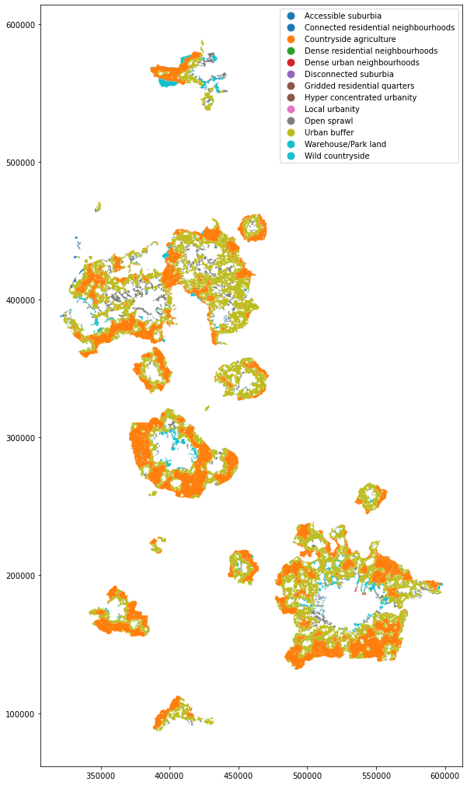

import geopandas, pandas
from pyogrio import read_dataframeThe signature of Greenbelts
Data
Greenbelts
Download if not available:
gb_url = (
'https://maps.communities.gov.uk/geoserver/dclg_inspire/ows'
'?service=WFS&version=2.0.0&request=GetFeature&'
'typeName=dclg_inspire:England_Green_Belt_2017-18_WGS84&'
'outputFormat=json&srsName=EPSG:27700'
)Read up:
%%time
gb = read_dataframe(
gb_url,
#where="GB_Name='Merseyside and Greater Manchester'"
)CPU times: user 4.46 s, sys: 491 ms, total: 4.95 s
Wall time: 16.3 sSignatures
- Pull data if not present
try:
open('signatures.gpkg').close()
except:
! wget https://figshare.com/ndownloader/files/30904861 -O signatures.gpkg- Read and clip
def read_clip(geom, p='signatures.gpkg'):
return geopandas.read_file(
p, mask=geom
).clip(geom)
import dask.bag as db
from dask.diagnostics import ProgressBar
bag = db.from_sequence(gb.geometry.tolist()).map(read_clip)
with ProgressBar():
clipped = pandas.concat(bag.compute())[ ] | 0% Completed | 3.0sERROR 1: PROJ: proj_create_from_database: Open of /opt/conda/share/proj failed
ERROR 1: PROJ: proj_create_from_database: Open of /opt/conda/share/proj failed
ERROR 1: PROJ: proj_create_from_database: Open of /opt/conda/share/proj failed
ERROR 1: PROJ: proj_create_from_database: Open of /opt/conda/share/proj failed
ERROR 1: PROJ: proj_create_from_database: Open of /opt/conda/share/proj failed
ERROR 1: PROJ: proj_create_from_database: Open of /opt/conda/share/proj failed
ERROR 1: PROJ: proj_create_from_database: Open of /opt/conda/share/proj failed
ERROR 1: PROJ: proj_create_from_database: Open of /opt/conda/share/proj failed[########################################] | 100% Completed | 3min 21.3sAnalysis
Newcastle
areas = (
clipped
.assign(area=clipped.area/1e6)
.groupby('type')
['area']
.sum()
.sort_values(ascending=False)
)
pandas.DataFrame({'area_SqKm': areas, 'pct': areas * 100 / areas.sum()})| area_SqKm | pct | |
|---|---|---|
| type | ||
| Urban buffer | 1159.736637 | 46.634218 |
| Countryside agriculture | 949.702936 | 38.188544 |
| Open sprawl | 276.501964 | 11.118432 |
| Warehouse/Park land | 64.006638 | 2.573774 |
| Accessible suburbia | 26.218758 | 1.054284 |
| Wild countryside | 4.106897 | 0.165143 |
| Connected residential neighbourhoods | 2.882481 | 0.115908 |
| Dense residential neighbourhoods | 2.162715 | 0.086965 |
| Disconnected suburbia | 1.517039 | 0.061002 |
| Dense urban neighbourhoods | 0.026317 | 0.001058 |
| Gridded residential quarters | 0.016737 | 0.000673 |
clipped.dissolve('type').reset_index().explore(
column='type', categorical=True, tiles='CartoDB dark_matter'
)England
clipped_all = geopandas.read_parquet('ss_clipped.pq')
areas = (
clipped_all
.assign(area=clipped_all.area/1e6)
.groupby('type')
['area']
.sum()
.sort_values(ascending=False)
)
pandas.DataFrame({'area_SqKm': areas, 'pct': areas * 100 / areas.sum()})| area_SqKm | pct | |
|---|---|---|
| type | ||
| Urban buffer | 7616.285193 | 47.000857 |
| Countryside agriculture | 7070.798905 | 43.634607 |
| Open sprawl | 828.546604 | 5.113044 |
| Warehouse/Park land | 441.630946 | 2.725349 |
| Wild countryside | 122.253761 | 0.754440 |
| Accessible suburbia | 90.120589 | 0.556143 |
| Dense residential neighbourhoods | 14.027865 | 0.086567 |
| Disconnected suburbia | 7.759982 | 0.047888 |
| Dense urban neighbourhoods | 6.503345 | 0.040133 |
| Connected residential neighbourhoods | 5.454813 | 0.033662 |
| Hyper concentrated urbanity | 0.915522 | 0.005650 |
| Local urbanity | 0.182910 | 0.001129 |
| Gridded residential quarters | 0.086033 | 0.000531 |
%%time
diss = clipped.dissolve('type')CPU times: user 1min 3s, sys: 262 ms, total: 1min 4s
Wall time: 1min 4sdiss| geometry | id | code | |
|---|---|---|---|
| type | |||
| Accessible suburbia | MULTIPOLYGON (((345756.808 364158.178, 345757.... | 16693_ACS | ACS |
| Connected residential neighbourhoods | MULTIPOLYGON (((357445.040 170360.777, 357455.... | 87517_CRN | CRN |
| Countryside agriculture | MULTIPOLYGON (((344905.850 166541.448, 344906.... | 459_COA | COA |
| Dense residential neighbourhoods | MULTIPOLYGON (((321066.452 387154.549, 321067.... | 82049_DRN | DRN |
| Dense urban neighbourhoods | MULTIPOLYGON (((451541.205 205161.991, 451539.... | 93538_DUN | DUN |
| Disconnected suburbia | MULTIPOLYGON (((389295.261 287291.254, 389295.... | 72390_DIS | DIS |
| Gridded residential quarters | MULTIPOLYGON (((430895.112 280263.914, 430896.... | 57941_GRQ | GRQ |
| Hyper concentrated urbanity | MULTIPOLYGON (((581550.000 185035.000, 581759.... | 96691_HDU | HDU |
| Local urbanity | MULTIPOLYGON (((451614.396 205420.349, 451503.... | 95707_LOU | LOU |
| Open sprawl | MULTIPOLYGON (((345032.833 175629.286, 345030.... | 29785_OPS | OPS |
| Urban buffer | MULTIPOLYGON (((347236.760 162524.876, 347253.... | 64309_URB | URB |
| Warehouse/Park land | MULTIPOLYGON (((356478.202 172281.238, 356470.... | 50397_WAL | WAL |
| Wild countryside | MULTIPOLYGON (((374257.555 170517.166, 374267.... | 44107_WIC | WIC |
diss.reset_index().plot(
column='type', categorical=True, legend=True, figsize=(18, 18)
)<AxesSubplot:>
- Clip signatures to green belts
- Calculate area of green belt by signature